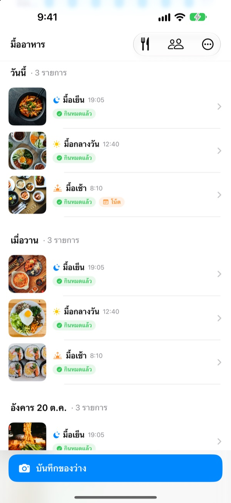
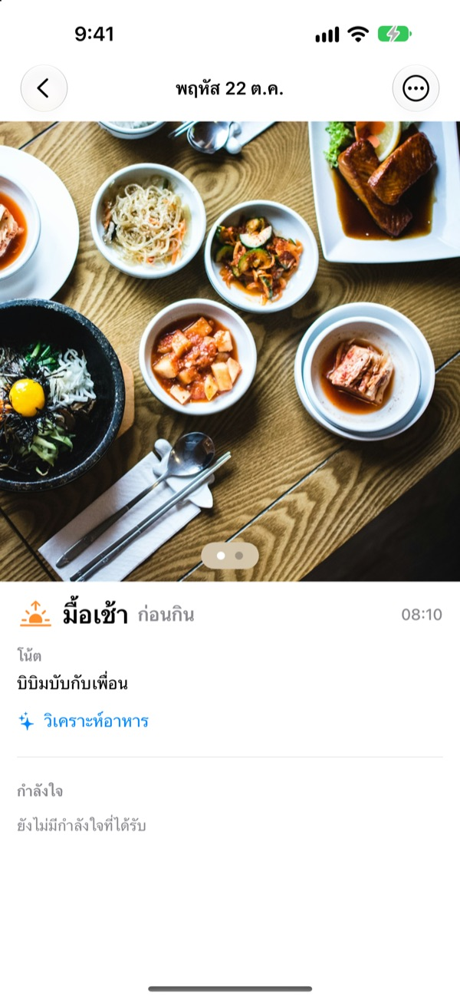
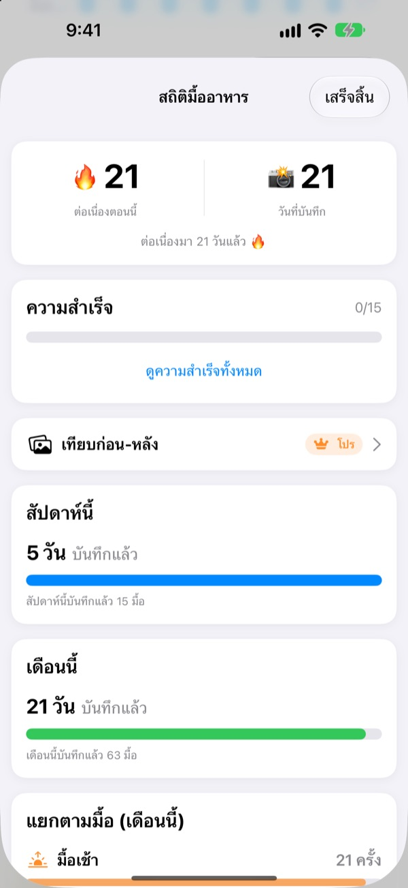
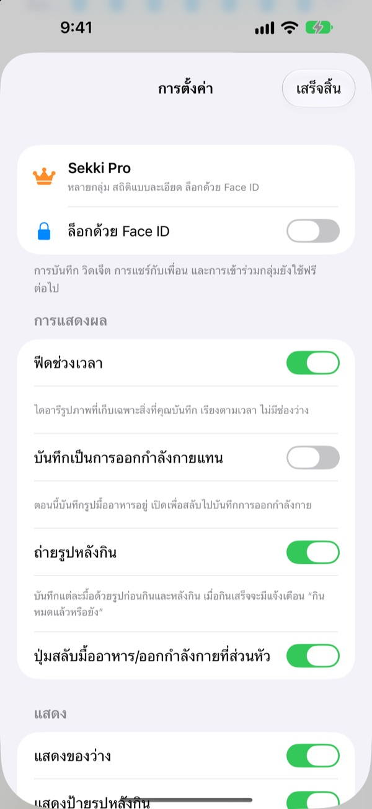

ถ่ายหนึ่งรูปก่อนกิน
แค่นั้นก็บันทึกเสร็จ
Sekki ดูเวลาที่ถ่าย แล้วแยกเป็นมื้อเช้า มื้อกลางวัน มื้อเย็น หรือของว่างให้เอง บันทึกแค่วันละมื้อ ความต่อเนื่องก็ไม่ขาด
การบันทึก สถิติ วิดเจ็ต และการแชร์กับเพื่อน ใช้ได้ฟรีทั้งหมด

ลองถ่ายดู
เลือกเวลาที่ถ่าย แล้วกดปุ่มบันทึก เหมือนในแอป ปุ่มจะบอกมื้อของเวลานั้นไว้ก่อนเลย
เคยเลิกจดบันทึกอาหารหลังผ่านไปสามวันไหม
ข้ามมื้อเช้าไปวันหนึ่ง ลืมบันทึกมื้อเย็นอีกวัน ช่องว่างเริ่มกวนใจจนสุดท้ายก็ลบแอปทิ้ง Sekki ไม่มีช่องว่าง มีแค่มื้อที่บันทึกเรียงตามเวลา และถ่ายแค่มื้อเดียว วันนั้นก็นับว่าบันทึกแล้ว
ถ่ายปุ๊บ มื้อก็ถูกจัดให้
Sekki ดูเวลาที่ถ่ายแล้วจัดเป็นมื้อเช้า มื้อกลางวัน มื้อเย็น หรือของว่าง เพิ่มรูปก่อนกินและหลังกิน บันทึกแบบไม่มีรูป หรือเขียนโน้ตก็ได้
แอปวิเคราะห์อาหารในรูปบนเครื่องฟรี และรูปไม่ออกไปจากโทรศัพท์ของคุณ

บันทึกที่ไม่มีวันลดลง
บันทึกวันละมื้อก็ต่อเนื่องได้ และจำนวนวันที่บันทึกรวมไม่มีวันลดลง สถิติรายสัปดาห์และรายเดือนบอกว่าบันทึกไปกี่วัน กี่มื้อ แทนที่จะเป็นเปอร์เซ็นต์ความสำเร็จ
ระหว่างทางยังสะสมความสำเร็จอย่าง ต่อเนื่อง 7 วัน และ คนตื่นเช้า ได้ด้วย

เฉพาะมื้อที่คุณเลือก ไม่ต้องเปิดแอป
เลือกมื้อที่อยากให้เตือน และตั้งเวลาให้เข้ากับชีวิตประจำวัน ถ่ายรูปก่อนกินไว้ แล้วกดกินหมดแล้วจากการแจ้งเตือนได้ทันที
บันทึกผ่านปุ่มการทำงาน Siri คำสั่งลัด หรือวิดเจ็ตก็ได้ เพิ่มเพื่อนด้วยรหัสแล้วเชียร์กันด้วยอีโมจิและคอมเมนต์

เริ่มได้ใน 3 ขั้นตอน
- 1
เลือกมื้อที่จะดูแล
เปิดครั้งแรก Sekki จะถามว่าให้เตือนมื้อไหน เปลี่ยนภายหลังได้ในการตั้งค่า
- 2
ถ่ายหนึ่งรูปก่อนกิน
ปุ่มบันทึกจะแสดงมื้อของเวลาตอนนั้นไว้แล้ว กด ถ่าย เสร็จ
- 3
กินเสร็จแล้วแตะ
แตะกินหมดแล้วในการแจ้งเตือนหรือวิดเจ็ต หรือเพิ่มรูปหลังกิน
บันทึกโดยไม่ต้องเปิดแอป
- การแจ้งเตือน
- หลังถ่ายรูปก่อนกิน กดกินหมดแล้วจากการแจ้งเตือนได้เลย
- วิดเจ็ตหน้าจอโฮม
- ดูจำนวนบันทึกวันนี้และมื้อที่กำลังกิน แล้วแตะปุ่มกินหมดแล้ว
- วิดเจ็ตหน้าจอล็อก
- แบบสี่เหลี่ยม วงกลม และบรรทัดเดียว
- ปุ่มการทำงาน · Siri · คำสั่งลัด
- บันทึกกินหมดแล้วด้วยปุ่มเดียวหรือประโยคเดียว
- บันทึกลงแอปรูปภาพ
- เปิดในการตั้งค่า แล้วมื้ออาหารกับการออกกำลังกายจะแยกอัลบั้ม Sekki กัน
- โหมดออกกำลังกาย
- บันทึกการออกกำลังกายแยกจากอาหาร และเห็นจำนวนครั้งของเดือนนี้ในทันที
ปุ่มกินหมดแล้วบนวิดเจ็ตใช้ได้กับ iOS 17 ขึ้นไป
บันทึกฟรี อยากดูลึกขึ้นมี Sekki Pro
ฟรี
- บันทึกด้วยรูปและแยกมื้ออัตโนมัติ รูปก่อนกินและหลังกิน โน้ต
- ความต่อเนื่อง จำนวนวันรวม สถิติรายสัปดาห์และรายเดือน ความสำเร็จ
- แจ้งเตือนมื้อที่เลือก และกดกินหมดแล้วโดยไม่ต้องเปิดแอป
- วิดเจ็ต ปุ่มการทำงาน Siri และคำสั่งลัด
- แชร์มื้ออาหารและการออกกำลังกายกับเพื่อน เชียร์ด้วยอีโมจิและคอมเมนต์
- สร้างกลุ่มได้ 1 กลุ่ม เข้าร่วมกลุ่มอื่นได้ไม่จำกัด
- วิเคราะห์อาหารบนเครื่อง
Sekki Pro
- หลายกลุ่มสำหรับครอบครัว ที่ทำงาน หรือเพื่อนออกกำลังกาย
- เทียบมื้ออาหารเมื่อหลายสัปดาห์ก่อนกับตอนนี้แบบเคียงข้างกัน
- ดูอาหารที่กินบ่อยที่สุด
- ล็อกแอปด้วย Face ID หรือ Touch ID
สมัครสมาชิกรายปีหรือรายเดือน หรือซื้อครั้งเดียวใช้ได้ตลอดชีพ
การสมัครสมาชิกจะต่ออายุอัตโนมัติ เว้นแต่ยกเลิกอย่างน้อย 24 ชั่วโมงก่อนสิ้นสุดรอบ ยกเลิกได้ทุกเมื่อที่ การตั้งค่า > บัญชี Apple > การสมัครรับ ข้อกำหนดการให้บริการ: m1zz.github.io/RoutineCamera/th/terms.html
คำถามที่พบบ่อย
รูปเก็บไว้ที่ไหน
เก็บไว้ในเครื่องของคุณ ถ้าเปิด บันทึกลงแอปรูปภาพอัตโนมัติ ในการตั้งค่า รูปจะไปอยู่ในอัลบั้ม Sekki ของแอปรูปภาพด้วย ขณะที่ แชร์มื้ออาหารของฉัน เปิดอยู่ (เปิดไว้ตั้งแต่แรก) รูปจะอัปโหลดขึ้น iCloud ให้เพื่อนที่เพิ่มไว้ดูได้ ปิดได้ที่ การตั้งค่า > บัญชีและการแชร์
เพิ่มเพื่อนอย่างไร
ในหน้าเพื่อน แชร์รหัส 6 ตัวของคุณ แล้วใส่รหัสของเพื่อน วางหลายรหัสพร้อมกันได้โดยคั่นด้วยจุลภาค
เชียร์เพื่อนอย่างไร
เปิดมื้ออาหารของเพื่อนแล้วฝากอีโมจิหรือคอมเมนต์สั้นๆ ถ้าเพื่อนยังไม่ได้บันทึก แตะช่องที่ว่างอยู่เพื่อสะกิดเบาๆ
ข้ามไปหนึ่งมื้อแล้วความต่อเนื่องจะขาดไหม
ไม่ขาด วันนั้นบันทึกมื้อไหนก็ได้สักมื้อ รวมถึงของว่าง ความต่อเนื่องก็ยังไปต่อ ต่อให้ข้ามไปทั้งวัน จำนวนวันที่บันทึกรวมก็ไม่ลดลง
ไม่ได้รับการแจ้งเตือน
ตรวจสอบใน การตั้งค่า iOS > การแจ้งเตือน ว่าอนุญาตให้ Sekki แจ้งเตือนแล้ว และเครื่องลงชื่อเข้า iCloud อยู่ เปลี่ยนเวลาเตือนมื้ออาหารได้ในการตั้งค่าของแอป
การวิเคราะห์อาหารส่งรูปไปที่เซิร์ฟเวอร์ไหม
ไม่ วิเคราะห์บนเครื่อง รูปจึงไม่ออกไปจากโทรศัพท์ ใช้ฟรีและไม่จำกัดจำนวนครั้ง
อยากลบบัญชีและข้อมูล
ไปที่ เพื่อน > บัญชี > ลบบัญชี บัญชีและข้อมูลมื้ออาหารบนเซิร์ฟเวอร์จะถูกลบและกู้คืนไม่ได้ ถ้ามีปัญหา ส่งอีเมลมาบอกได้เลย
ยกเลิกการสมัครสมาชิกอย่างไร
ที่ การตั้งค่า > บัญชี Apple > การสมัครรับ จะต่ออายุอัตโนมัติ เว้นแต่ยกเลิกอย่างน้อย 24 ชั่วโมงก่อนสิ้นสุดรอบ แบบตลอดชีพจ่ายครั้งเดียว
แจ้งปัญหา เสนอฟีเจอร์ หรือสอบถามเรื่องบัญชี ส่งอีเมลมาที่ leeo@kakao.com หรือ DM ทาง Instagram @lee25_ios ปกติตอบภายใน 1 ถึง 2 วัน